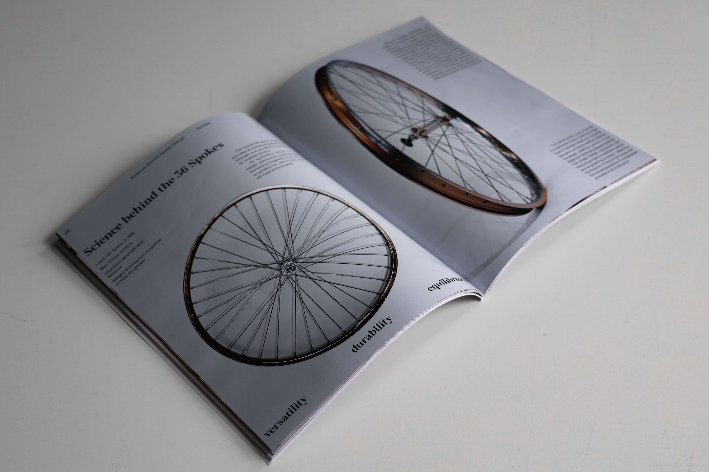
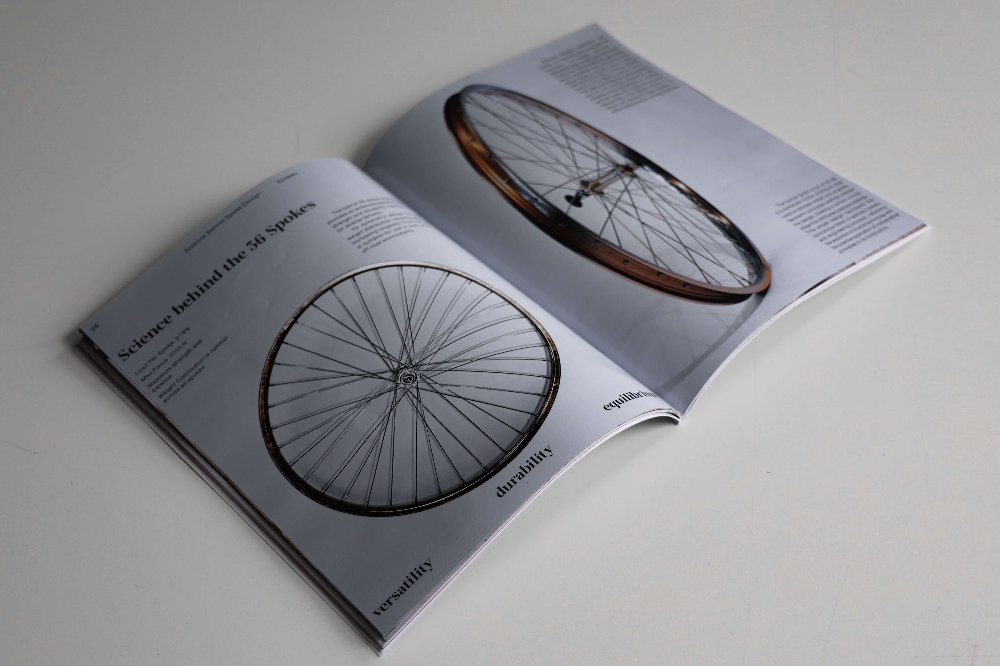

Axles & Spokes
This project is a conceptual exploration of the bicycle wheel as a symbol of balance, motion, and unity, expressed across 3 distinct media formats.
The print magazine, interactive website and social media campaign work together to present the bicycle wheel's technical precision and cultural significance. Each format engages the audience in a unique way, providing a comprehensive understanding of how the wheel influences urban mobility, design, and human progress.
Scope:
Graphic Design
Photography
Editorial Design
Interactive Prototype
Animation
Software:
Adobe InDesign
Adobe Photoshop
Adobe After Effects
InkJet Printing
Figma
 
